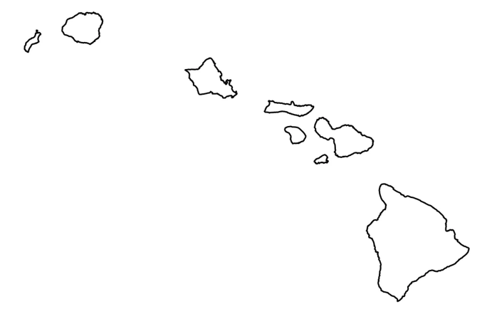
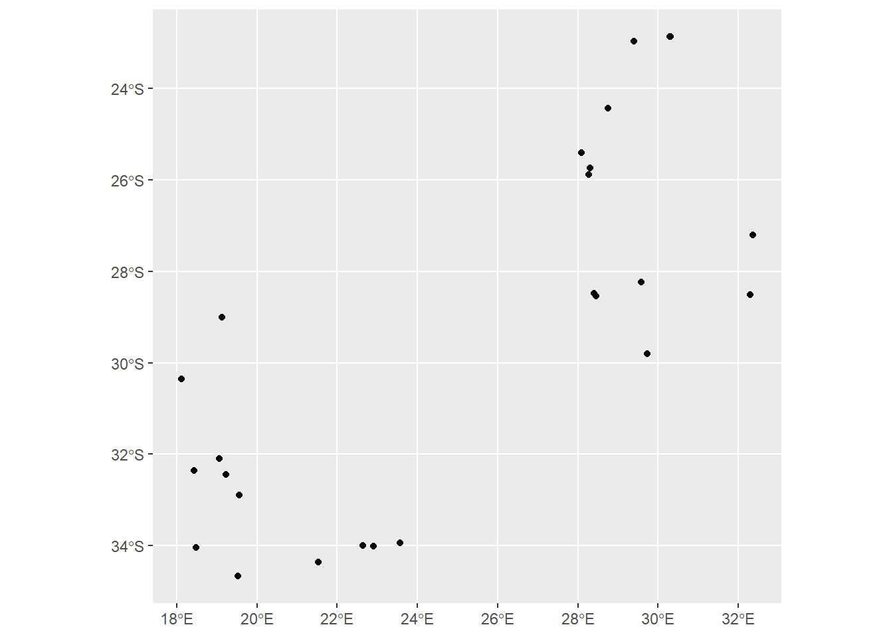
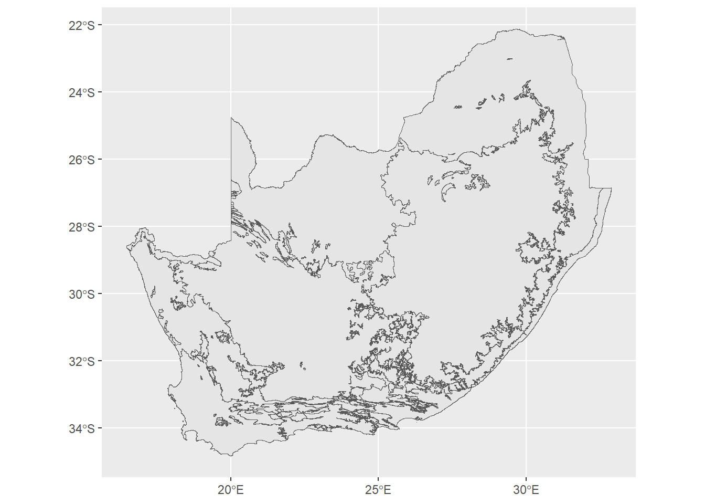
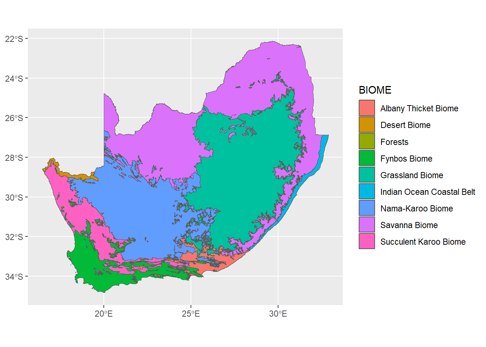

The sf package offers a lot of different functionality for handling vector data, and interfaces with many different packages that extend our analytical and visualization capabilities. But before we get into these aspects, it’s probably useful to see how the Simple Features geometry works with some of the things we already know. In this section, we’ll work through importing data, making changes to it using some of the tidyverse functions, and visualizing it using ggplot2.
Reading vector data from shapefiles
By and large, the ESRI shapefile is the standard for storing and sharing vector data. Shapefiles are actually collections of multiple files that store different aspects of the data (e.g., the .prj file contains projection information), but the main file in this structure is the .shp file. To read this kind of file, we’ll use the st_read function:
saCores<-st_read("data/SACharCores.shp")
Reading layer `SACharCores' from data source
`C:\Users\bdav_\Dropbox\Teaching\ENV 170\Fall 2024\Lectures\Week 10\Lab\data\SACharCores.shp'
using driver `ESRI Shapefile'
Simple feature collection with 27 features and 3 fields
Geometry type: POINT
Dimension: XY
Bounding box: xmin: 18.11663 ymin: -34.66926 xmax: 32.3673 ymax: -22.85796
Geodetic CRS: WGS 84
These data are locations of sediment cores containing microcharcoal that have been collected from sites around South Africa used to reconstruct fire history. The message above gives us some summary information about the dataset:
The file location where the data is being read in from and its file format (ESRI Shapefile)
It is being stored as a Simple Features collection with 27 features (the number of sediment cores) and 3 fields (variables)
The data has a POINT type geometry, meaning that it is a 0-dimensional geometry (e.g., it has no length, width, etc.)
Somewhat confusingly, it then gives a value called “Dimension”, but this refers to the number of dimensions in the coordinate space (here it is XY data) rather than the dimensionality of the objects
Bounding box: This is the spatial extent covered by the data, represented by minimum and maximum x and y values
The coordinate reference system (or CRS) refers to the system that is being used to In this case, it is longitude/latitudes based on the WGS 84 datum
We can access these attributes individually using built-in functions of the sf package, which usually begin with the prefix st_ (which stands for spatial type). For example, to get the coordinates of the bounding box edges, we can use st_bbox:
This shows minimum and maximum x and y coordinates (here expressed in longitude and latitude) for the entire dataset. Likewise, if we wanted to access the coordinate reference system, we can use st_crs:
This convoluted-looking set of metadata is a Well Known Text (WKT) formatting of coordinate reference information, developed by the Open Geospatial Consortium. It tells R what kind of space the coordinates exist in (e.g., planar vs spheroid).
If we just enter the spatial object’s name by itself, we get a summary of information about the dataset similar to the one above, but, like looking at a tibble, we also get a preview of the data itself:
saCores
Simple feature collection with 27 features and 3 fields
Geometry type: POINT
Dimension: XY
Bounding box: xmin: 18.11663 ymin: -34.66926 xmax: 32.3673 ymax: -22.85796
Geodetic CRS: WGS 84
First 10 features:
SiteNo SiteName SiteCode geometry
1 280 Craigrossie CRA POINT (28.46 -28.54)
2 322 Rietvlei Dam RD POINT (28.27 -25.88)
3 335 Lake Teza TEZ POINT (32.3007 -28.5117)
4 378 Elim ELI POINT (28.41 -28.48)
5 455 Wonderkrater borehole 3 WON POINT (28.75 -24.43)
6 598 Lake Sibaya SIB POINT (32.3673 -27.2065)
7 600 Funduzi FUN POINT (30.3 -22.8583)
8 771 Braamhoek BRA POINT (29.58333 -28.2333)
9 774 Moreletta River MOR POINT (28.3 -25.73)
10 1476 Tswaing Crater TC POINT (28.0832 -25.40865)
These are the variables associated with our data (sometimes called attributes in GIS lingo). This is just a table of data with an extra column, geometry, that stores the spatial information. In fact, if we wanted to remove the spatial information and just use the associated data, the package offers a handy st_drop_geometry function, which will just leave you with a tibble of the variables:
coreSites<-st_drop_geometry(saCores)coreSites
SiteNo SiteName SiteCode
1 280 Craigrossie CRA
2 322 Rietvlei Dam RD
3 335 Lake Teza TEZ
4 378 Elim ELI
5 455 Wonderkrater borehole 3 WON
6 598 Lake Sibaya SIB
7 600 Funduzi FUN
8 771 Braamhoek BRA
9 774 Moreletta River MOR
10 1476 Tswaing Crater TC
11 1479 Scot's Farm Borehole 1 SFB
12 1480 Tate Vondo TV
13 1481 Mahwaqa MHQ
14 775 Cederberg Pakhuisch PAK
15 1458 Verlorenvlei VER
16 1459 Pearly Beach PB
17 1460 Rietvlei Wetland RW
18 1461 Eilandvlei lake EIL
19 1462 De Rif-1 DR*
20 1463 De Rif-2 <NA>
21 1472 Princess Vlei PRI
22 1473 Katbakkies Pass KBP
23 1474 Groenkloof GKF
24 1475 Platbos 1 PB1
25 1477 Pella 1_4a <NA>
26 1478 Vankervelsvlei VAN
27 1482 Pella 1_1 PEL*
Fields = Variables = Columns
Previous packages used for spatial work in R stored the data in complex ways, where each kind of data structure had its own object type, and accessing the variables might The sf package simplifies this process by treating all spatial information as a single variable, geometry, in an otherwise normal table of data.
Let’s look at another shapefile: biomes of southern Africa. This comes from the South Africa National Biodiversity Institute and is based on a 2006 classification scheme by Mucina and Rutherford.
Here you can see a similar summary to the previous dataset, but a major distinction is that this is MULTIPOLYGON data, or 2-dimensional geometry (e.g., has length and width). The sf package distinguishes between POLYGON and MULTIPOLYGON data. In a POLYGON geometry, each individual polygon is a distinct feature, while in a MULTIPOLYGON geometry, multiple polygons might be included in a single feature.
You could think about it in terms of the main islands of Hawaii:

A POLYGON dataset might have separate features for Oahu, Maui, Kauai, and so on, while a MULTIPOLYGON dataset might have 8 polygons that are all a single object called “Hawaii”. For the biomes dataset, some biomes may include several disconnected components, but are here considered to be a single “multipolygon”.
Because the data are stored as a table, we can use pretty much any of the functions we would normally use to access and manipulate the data. Here, we’ll modify the data using filter and select to include only a subset of rows and columns:
And because the data are in table format, we can also integrate them into a ggplot function to quickly view patterns within the data. For example, let’s say we wanted to assess the total square kilometers in the Fynbos and Savanna biomes:
Over the years, the developers of ggplot2 have recognized widespread interest in using the package to make maps, and have updated the software to include handling and plotting of spatial data At the same time, efforts like the promotion of the Simple Features data structure are a recognition that data interoperability is a priority for many data users.
These two processes meet in the middle with the geom_sf object. This is a way of translating Simple Features data (like that from the sf package) into a format that can be manipulated in the ggplot2 environment. For example
ggplot(data= saCores) +geom_sf()

This probably looks very similar to what you might expect from geom_point, and this makes sense since we’re dealing with point data. However, geom_sf is designed to handle vector data in a range of formats. For example, we can use the same function call to plot our polygon biomes data:
ggplot(data= saBiomes) +geom_sf()

What’s important to keep in mind here is that geom_sf is taking into account the information in the geometry column of the object. It recognizes that this is polygon data, so it plots it accordingly.
Now that the data are in a ggplot function, we can add some aesthetic mappings. For starters, let’s map the biomes on to the color variable:
ggplot(data= saBiomes,aes(fill=BIOME)) +geom_sf()

That looks pretty good, but there are some things that aren’t really working for this map. For example, the grey background is pretty unnecessary in this case, so we can get rid of it using a theme like theme_classic or theme_minimal.
We also probably don’t need the dark grey borders around each polygon; in places where there’s a lot of lines close together it gets pretty messy. We can eliminate these by adding color=NA to the geom_sf function. This is saying to not plot the elements to which color would be mapped. Since it’s being applied over the whole plot, and not relative to some variable in the data, we don’t need the aes function.
Finally, we can also add a label to the legend to edit the capitalization on the variable name.
Much better. Keep in mind right now we’re mapping a nominal (categorical) value to fill, but we could just as easily use a ratio/interval (continuous) value. For example, instead of using the name of the biome, we could color by the total area in square kilometers:
Notice the use of the bquote function to modify the label to include the superscripted 2, which we learned about last week.
OK, back to our biomes map. The color scheme is a bit intense: when working with mapped data that covers large areas of graphic, it’s usually a good idea to use more muted tones. To do this, we’re going to draw on our friend ColorBrewer with the scale_fill_brewer function:
Now let’s say we want to add the cores as a layer to this map. We can do this by adding another geom_sf call, but this time using the cores object as the data argument:
Error in `geom_sf()`:
! Problem while computing aesthetics.
ℹ Error occurred in the 2nd layer.
Caused by error:
! object 'BIOME' not found
Oops. What happened? This error relates to the way we’re doing the aesthetic mapping. At the moment, the aes function is inside the opening ggplot function, so this mapping is being applied to every geom underneath it. But since we now have geoms coming from two different datasets (biomes and cores), the mapping won’t make sense because the cores data has different variables.
When you’re dealing with more than one dataset, it’s good practice to put the arguments in the geoms they are referencing. So here, we’ll move the arguments from the ggplot function into the first geom_sf function:
Lovely. Keep in mind that the order in which you place the geoms will determine their drawing order of each layer. So, for example, if we moved the geom_sf that plots the cores up to the top of the function, our cores will be hidden behind the biomes data that gets plotted immediately afterwards:
We can keep modifying this image until we’re happy with how it looks, just as we have with other kinds of plots. But just by adding a few new function to our toolkit, like st_read and geom_sf, we’re able to incorporate spatial data into our work.
Try it yourself!
There’s an additional shapefile in here called south_africa_border, which gives the borders of South Africa, Lesotho, and Eswatini. Using what you’ve learned above, read this file in, plot it and then add it the plot with the biomes and the cores.